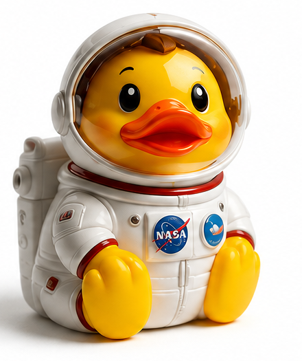

今日の出来事
NASAのIMAPミッションでは、10個すべての観測機器がデータ取得に成功しています。8月7日、NASAはそのうち7機器について、4月30日までに取得された科学データを公開しました。太陽風や星間空間から来る粒子・ちりを調べ、私たちの太陽系を取り巻く環境の理解につなげるミッションです。

One day. One story. One duck.
1日、1つの話、1羽のダック。
NASAのIMAPミッションでは、10個すべての観測機器がデータ取得に成功しています。8月7日、NASAはそのうち7機器について、4月30日までに取得された科学データを公開しました。太陽風や星間空間から来る粒子・ちりを調べ、私たちの太陽系を取り巻く環境の理解につなげるミッションです。
まだ知らない宇宙を、少しだけのぞけた日。だから今日は、好奇心いっぱいの宇宙飛行士ダックです。小さな体でも、視線はずっと遠くへ。
今日から始まる、1日1羽の小さなタイムカプセル。
NASA IMAP、7機器の科学データを公開
明日から、ここに仲間が増えていきます。
The Daily Duck は、その日の注目ニュースから、好奇心・驚き・希望・楽しさにつながる話題を1つ選び、AIと人間の最終チェックでオリジナルのラバーダック作品にするデイリープロジェクトです。戦争、死亡、重大事故、災害などの悲惨な出来事は原則として選びません。
ニュースそのものを置き換えるサイトではありません。気になった話は、必ず元の報道・公式情報も読んでみてください。
明日も、何かいいことがありますように。 🐤